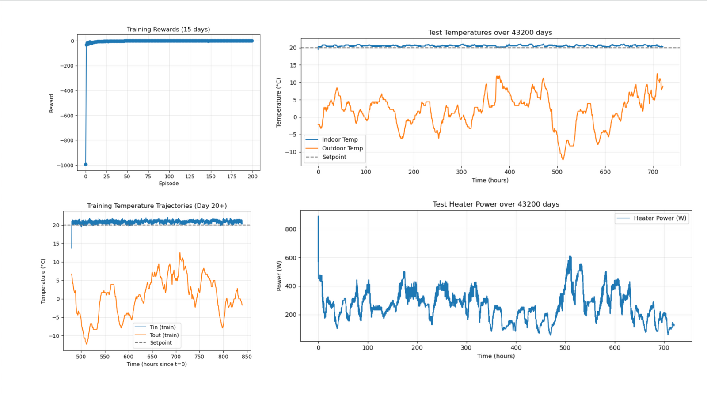
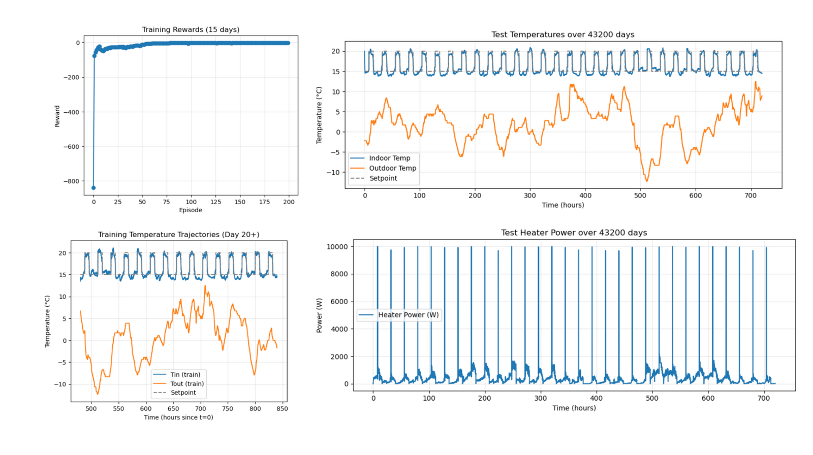

Reinforcement learning for building heating control
Teaching a Soft Actor-Critic agent to hold a comfort band in a simulated building — and to stop slamming the heater on and off while doing it.

Problem
A heating controller has two jobs that pull against each other: keep occupants in a comfort band, and use as little energy as possible doing it. Classical rule-based control handles this with thresholds, which produces the familiar bang-bang behavior — full power, off, full power. Reinforcement learning can in principle find a smoother policy, but a continuous action space and a slow physical plant make it easy to train an agent that either oscillates or quietly gives up on comfort to save energy.
Approach
I implemented Soft Actor-Critic in PyTorch against a Gym environment wrapping a building FMU exported from OpenModelica. SAC optimizes an entropy-regularized objective, which keeps the policy exploring instead of collapsing early onto a mediocre strategy, and the temperature parameter that weights entropy is itself learned against a target.
The architecture is a twin-critic setup — two Q-networks, with the minimum taken when forming the target — to blunt the overestimation bias a single critic develops. Two stability measures borrowed from TD3 matter more than anything else here: target-policy smoothing, which adds clipped noise to the target action so the critic cannot exploit a sharp peak in its own estimate, and delayed actor updates, which let the critics settle before the policy chases them. Together they are what turned erratic on/off heating into smooth modulation.
Making the FMU cooperate
The agent acts once a minute, but stepping the FMU a full 60 seconds at a time triggered numerical instability and temperature-excess errors inside the solver. I added a sub-stepping layer that breaks each control step into 2-second communication steps while holding the action constant, which kept the co-simulation stable without changing the control interval the agent sees.
Fixed and scheduled setpoints
I trained two agents. The first holds a constant 20 °C. The second follows an occupancy schedule that drops to 15 °C when the building is empty and returns to 20 °C when it is occupied.
The scheduled agent initially failed in an interesting way. With only indoor and outdoor temperature in its observation, it was time-blind: it could see that it had missed a setpoint change, but never that one was coming, so it always reacted late. Expanding the observation to five dimensions — adding the current setpoint, the next setpoint, and a normalized time of day — let it anticipate the transition instead of chasing it.
A second failure mode was the agent under-heating to minimize the energy penalty. I handled that with progressive energy-factor scheduling: train comfort tracking first with the energy penalty off, then introduce it gradually once the policy can already hold the band.

Results
Both agents converge within 50 to 75 episodes and hold setpoint to within ±0.5 °C, across weather ranging from a January outdoor low near −12 °C to mild spring conditions, without retraining per season. Against PPO and DQN baselines, SAC reached that accuracy faster and held it more steadily — the entropy term is what keeps the policy exploring long enough to find smooth modulation rather than settling early on switching behavior.
The contrast between the two power traces is the more interesting finding. The fixed-setpoint agent modulates under about 900 W continuously. The scheduled agent spends most of its time lower, but every return to occupancy costs a full-power recovery burst — the energy saved by setting back is partly spent buying the building back up again. Whether a setback schedule is worth running at all depends on how long the unoccupied period is relative to that recovery cost.
What these runs do and don’t show
The plots on this page characterize the two SAC agents themselves; the baseline comparison was run separately and isn’t reproduced here. The seasonal energy totals from these runs are also not a performance claim — February and June differ mostly because the weather differs, and reading them as a controller result would be a mistake.
Everything here is also simulation. Sim-to-real transfer onto the lab’s 1,500–2,000 sq ft configurable building energy testbed is what tells you whether the policy survives contact with a real plant, and that is where the hyperparameter sweeps across learning rate, entropy temperature, discount factor and replay buffer earn their keep.
Code
Both agents, including the environment wrapper, reward shaping, sub-stepping and the training and evaluation loops.
sac_fixed_setpoint.py sac_moving_setpoint.py
- Lab
- Building Energy Research Lab
- Dates
- Sep 2024 – Sep 2025
- Tools
- Python, PyTorch, FMPy, OpenModelica, Dymola
- Algorithm
- Soft Actor-Critic with TD3 stabilization